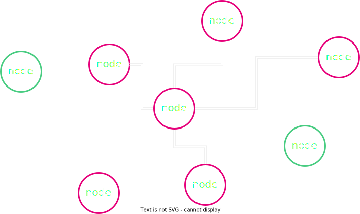
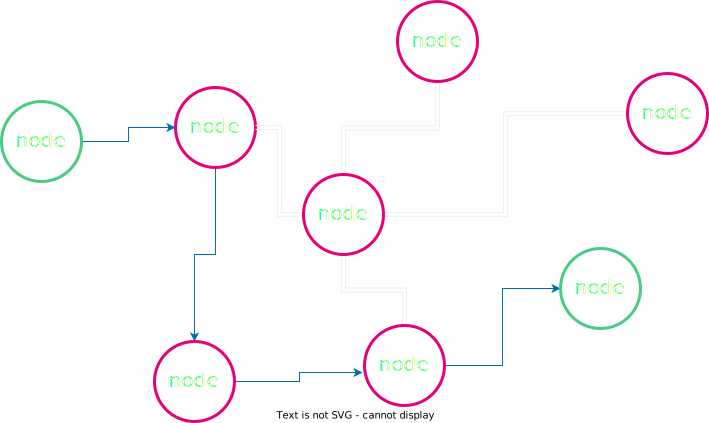
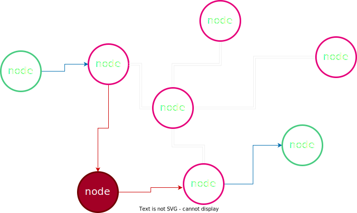
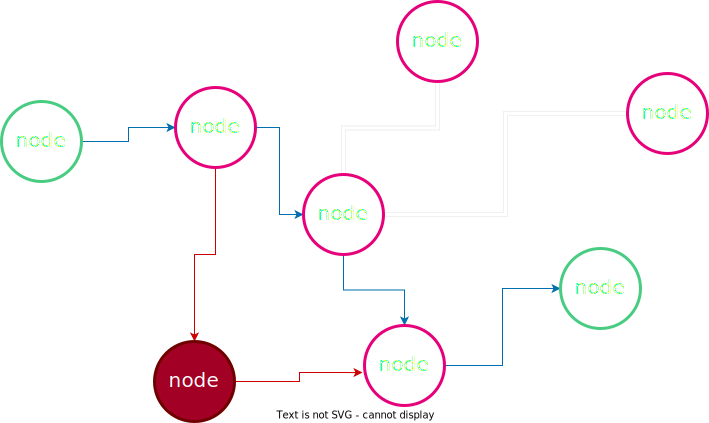
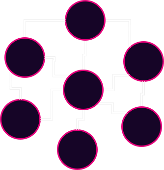

<!DOCTYPE html>
<html lang="en">

<head>
  <meta charset="utf-8" />
  <meta name="viewport" content="width=device-width, initial-scale=1.0, maximum-scale=1.0, user-scalable=no" />

  <title>Peer-to-Peer (P2P) Networking</title>
  <link rel="icon" href="./../../assets/favicon.svg" />
  <link rel="shortcut icon" href="./../../assets/favicon.png" />
  <link rel="stylesheet" href="./../../dist/reset.css" />
  <link rel="stylesheet" href="./../../dist/reveal.css" />
  <link rel="stylesheet" href="./../.././assets/styles/PBA-theme.css" id="theme" />
  <link rel="stylesheet" href="./../../css/highlight/shades-of-purple.css" />

  <link rel="stylesheet" href="./../.././assets/styles/custom-classes.css" />

</head>

<body class="site">
  <header class="site-header">
    <!-- This logo is a link only on the watching server, not the production build -->
    <a href="">
      
    </a>
  </header>
  <main class="reveal">
    <article class="slides">
      <section  data-markdown><script type="text/template">

# Peer-to-Peer Networking
</script></section><section  data-markdown><script type="text/template">
## Introduction/Agenda

- History of p2p networks <!-- .element: class="fragment" data-fragment-index="1" -->
- Discuss the network layer and network conditions that blockchains operate on(Mostly) <!-- .element: class="fragment" data-fragment-index="2" -->
- Talk about traditional web2 network overlays pros vs cons with web3 network overlays <!-- .element: class="fragment" data-fragment-index="3" -->
- Discuss attacks and how to address along with the underlying threat model <!-- .element: class="fragment" data-fragment-index="4" -->
</script></section><section  data-markdown><script type="text/template">
## ARPANET

- First operational packet-switching network <!-- .element: class="fragment" data-fragment-index="2" -->
- Developed in the late 1960s by DARPA(The Defense Advanced Research Projects Agency) <!-- .element: class="fragment" data-fragment-index="3" -->
- Laid the foundation for the modern internet <!-- .element: class="fragment" data-fragment-index="4" -->

<aside class="notes"><p>Total Information Awareness (TIA): In the early 2000s, DARPA initiated the TIA program aimed at developing technologies for mass surveillance and data analysis. The project raised concerns about privacy and civil liberties, eventually leading to its cancellation in 2003 due to public outcry.</p>
</aside></script></section><section  data-markdown><script type="text/template">
## Packet Switching

- Mode of data transmission in which a message is broken into a number of parts that are sent independently(Packets) <!-- .element: class="fragment" data-fragment-index="2" -->
- Packets are sent over whatever route is optimal <!-- .element: class="fragment" data-fragment-index="3" -->
- Packets are reassembled at the destination <!-- .element: class="fragment" data-fragment-index="4" -->
</script></section><section  data-markdown><script type="text/template">
## Packet Switching


<aside class="notes"><p>Mention that headers contain some addressing, destination information, and ordering typically depending</p>
</aside></script></section><section  data-markdown><script type="text/template">
## Packet Switching


</script></section><section  data-markdown><script type="text/template">
## Packet Switching


</script></section><section  data-markdown><script type="text/template">
## Packet Switching


</script></section><section  data-markdown><script type="text/template">
## Packet Switching


</script></section><section  data-markdown><script type="text/template">
## Peer-to-Peer (P2P) Networks

- P2P is a decentralized form of network structure <!-- .element: class="fragment" data-fragment-index="2" -->
- Unlike client-server model, all nodes (peers) are equal participants <!-- .element: class="fragment" data-fragment-index="3" -->
- Data is shared directly between systems without a central server <!-- .element: class="fragment" data-fragment-index="4" -->
- Peers contribute resources, including bandwidth, storage space, and processing power <!-- .element: class="fragment" data-fragment-index="5" -->
</script></section><section  data-markdown><script type="text/template">
## Historical P2P applications

<aside class="notes"><p>Napster, Limewire</p>
</aside></script></section><section  data-markdown><script type="text/template">
## Napster

- Launched in 1999, popular P2P platform <!-- .element: class="fragment" data-fragment-index="2" -->
- Central server for indexing, P2P for transfers <!-- .element: class="fragment" data-fragment-index="3" -->
- Shutdown in 2001 due to legal issues <!-- .element: class="fragment" data-fragment-index="4" -->

<aside class="notes"><p>Napster&#39;s story is closely tied with the band Metallica.
In 2000, Metallica discovered that a demo of their song &quot;I Disappear&quot; was being circulated via Napster before its official release.
This led to Metallica filing a lawsuit against Napster for copyright infringement.
Napster had to comply by banning hundreds of thousands of users from their platform who were sharing Metallica&#39;s music.
This was a turning point in digital copyright law and played a significant role in Napster&#39;s eventual shutdown in 2001.</p>
</aside></script></section><section  data-markdown><script type="text/template">
## Napster Setup


</script></section><section  data-markdown><script type="text/template">
## Napster Setup


</script></section><section  data-markdown><script type="text/template">
## Napster Setup


</script></section><section  data-markdown><script type="text/template">
## Napster Setup


</script></section><section  data-markdown><script type="text/template">
## Gnutella(Limewire)

- Each node serves as both a client and a server no central server <!-- .element: class="fragment" data-fragment-index="2" -->
- Query all connected nodes for files <!-- .element: class="fragment" data-fragment-index="3" -->
- Gain peer connections to the network via Bootnodes <!-- .element: class="fragment" data-fragment-index="4" -->
- Ordered to shutdown in 2010 by United States Court <!-- .element: class="fragment" data-fragment-index="5" -->

<aside class="notes"><ul>
<li>Check local filestore for file and if it is not available, forward the request to all connected peers.</li>
<li>Gnutella generates a significant amount of network traffic by flooding the network with requests.</li>
</ul>
</aside></script></section><section  data-markdown><script type="text/template">
<section>
    <h2>Client-Server vs Peer-to-Peer (P2P) Networks</h2>
    <table>
        <thead>
            <tr>
                <th></th>
                <th>Client-Server Network</th>
                <th>P2P Network</th>
            </tr>
        </thead>
        <tbody>
            <tr class="fragment">
                <td>Structure</td>
                <td>Centralized: One or more central servers control the network</td>
                <td>Decentralized: All nodes (peers) participate equally</td>
            </tr>
            <tr class="fragment">
                <td>Data Flow</td>
                <td>Server provides data to clients</td>
                <td>Peers directly share data with each other</td>
            </tr>
            <tr class="fragment">
                <td>Resource Management</td>
                <td>Servers manage resources and control access</td>
                <td>Peers contribute resources including bandwidth, storage space, and processing power</td>
            </tr>
            <tr class="fragment">
                <td>Scalability</td>
                <td>Can be limited by server capacity</td>
                <td>Highly scalable due to the distribution of resources</td>
            </tr>
            <tr class="fragment">
                <td>Security</td>
                <td>Centralized security measures, single point of failure</td>
                <td>Potential for some security issues, malware(Depending on how it is implemented)</td>
            </tr>
        </tbody>
    </table>
</section>
</script></section><section  data-markdown><script type="text/template">
## Centralized vs Decentralized Networks


<aside class="notes"><p>Talk about how when a partition happens in P2P vs Centralized.
In p2p, only one node needs to have a full copy in order for the file to be able to be distributed across the network.</p>
</aside></script></section><section  data-markdown><script type="text/template">
## Centralized vs Decentralized Networks


</script></section><section  data-markdown><script type="text/template">
## Centralized vs Decentralized Networks


</script></section><section  data-markdown><script type="text/template">
## Centralized vs Decentralized Networks


</script></section><section  data-markdown><script type="text/template">
## Advantages to Decentralized Networks

- No privileged nodes <!-- .element: class="fragment" data-fragment-index="2" -->
- Less bottlenecks with bandwidth <!-- .element: class="fragment" data-fragment-index="3" -->
- DOS resistant <!-- .element: class="fragment" data-fragment-index="4" -->
- No centralized infrastructure necessary (Except internet for now...) <!-- .element: class="fragment" data-fragment-index="5" -->

<aside class="notes"><ol>
<li>No single node or nodes (CDN) have access to all of the content or files or is critical for operating the network.
Each node has a copy of the data.</li>
<li>No central node carrying all of the load of traffic.
Block production and Block peering/importing can be mentioned here.</li>
<li>Difficult to overload the network or DOS (Not a single node is privileged).</li>
<li>Although many nodes are run on Centralized cloud compute platforms, they don&#39;t have to be (Typically).</li>
</ol>
</aside></script></section><section  data-markdown><script type="text/template">
## Difficulties or Disadvantages

- Since it is permissionless, a node can share malicious resources <!-- .element: class="fragment" data-fragment-index="2" -->
- Latency <!-- .element: class="fragment" data-fragment-index="3" -->
- Difficult to regulate illicit activity <!-- .element: class="fragment" data-fragment-index="4" -->
- The network is limited by nodes with the weakest hardware <!-- .element: class="fragment" data-fragment-index="5" -->

<aside class="notes"><ol>
<li>Latency may be an issue if we need to wait for many peers to receive the data produced from a single node since everyone may not have a direct connection.
Mention finality time!</li>
<li>No central point to go and snoop all users data (for better or for worse).</li>
<li>Why we have hardware requirements for blockchain networks.</li>
</ol>
</aside></script></section><section ><section data-markdown><script type="text/template">
## Gossip Protocol


<aside class="notes"><ul>
<li>Talk about how we have and want block 45 being peered to others</li>
</ul>
</aside></script></section><section data-markdown><script type="text/template">
## Gossip Protocol


<aside class="notes"><p>Talk about advertising vs just blind sending and how that can be inefficient</p>
</aside></script></section></section><section  data-markdown><script type="text/template">
<section>
    <h2>Structured vs Unstructured P2P Networks</h2>
    <table>
        <thead>
            <tr>
                <th></th>
                <th>Structured P2P Networks</th>
                <th>Unstructured P2P Networks</th>
            </tr>
        </thead>
        <tbody>
            <tr class="fragment">
                <td>Organization</td>
                <td>Nodes are organized following specific protocols and structures (like Distributed Hash Tables)</td>
                <td>Nodes are connected in an ad-hoc manner without any particular organization</td>
            </tr>
            <tr class="fragment">
                <td>Search Efficiency</td>
                <td>Efficient search operations due to structured nature</td>
                <td>Search operations may be less efficient and can involve flooding the network</td>
            </tr>
            <tr class="fragment">
                <td>Flexibility</td>
                <td>Less flexible as changes in topology require restructuring</td>
                <td>Highly flexible as nodes can freely join, leave, and reorganize</td>
            </tr>
            <tr class="fragment">
                <td>Privacy</td>
                <td>Data location is predictable due to structured organization</td>
                <td>Greater potential for anonymity</td>
            </tr>
        </tbody>
    </table>
</section>
</script></section><section  data-markdown><script type="text/template">
## Discovery

1. Connect to a peer <!-- .element: class="fragment" data-fragment-index="2" -->
1. Ask peer for a list of their known nodes <!-- .element: class="fragment" data-fragment-index="3" -->
1. Connect to random subset of peers from the list <!-- .element: class="fragment" data-fragment-index="4" -->
1. Repeat steps 2 and 3 <!-- .element: class="fragment" data-fragment-index="5" -->
</script></section><section  data-markdown><script type="text/template">
## Applications

<aside class="notes"><ol>
<li>What are some of the types of applications that lend themselves to this kind of network topology? Can anyone think of any?</li>
<li>File sharing(Music)?</li>
<li>Messaging and communication?</li>
</ol>
</aside></script></section><section  data-markdown><script type="text/template">
## Initial Discovery

- Bootnode/bootnodes (More on this later in Substrate)

<aside class="notes"><ol>
<li>Must know someone who is participating in the network initially(Bootnode)</li>
</ol>
</aside></script></section><section  data-markdown><script type="text/template">
## Attacks

<aside class="notes"><ul>
<li>Can anyone think of a way to exploit some of these networks?</li>
<li>What would be some things to try to take advantage of?</li>
</ul>
</aside></script></section><section  data-markdown><script type="text/template">
## Attacks


<aside class="notes"><ol>
<li>Distorts view of the healthy normal honest state of the network</li>
<li>Transaction confirmations can be fictions</li>
</ol>
</aside></script></section><section  data-markdown><script type="text/template">
## Attacks


</script></section><section  data-markdown><script type="text/template">
## Eclipse Attack Execution

1. Flood a target node with a bunch of malicious peer addresses <!-- .element: class="fragment" data-fragment-index="2" -->
1. The targeted node then stores these malicious peers and utilizes them when re-syncing on next bootup <!-- .element: class="fragment" data-fragment-index="3" -->
1. DOS targeted node to take it offline to force a resync with these new malicious peers <!-- .element: class="fragment" data-fragment-index="4" -->
</script></section><section  data-markdown><script type="text/template">
## Preventing Attacks

- Restrict inbound connections in some way <!-- .element: class="fragment" data-fragment-index="2" -->
- Random selection of peers to connect with <!-- .element: class="fragment" data-fragment-index="3" -->
- Deterministic node selection (Bootnodes) <!-- .element: class="fragment" data-fragment-index="4" -->
- Restricting new nodes (Probably not what we want...) <!-- .element: class="fragment" data-fragment-index="5" -->

<aside class="notes"><ol>
<li>Be wary of new connections with other nodes</li>
<li>Don&#39;t just take the most recent request for connections to avoid the flooding</li>
<li>Bootnodes with higher credibility and trust (Can be a bottleneck) - Rotate bootnodes as they are also subject to attacks</li>
</ol>
</aside></script></section><section  data-markdown><script type="text/template">
## Conclusion

P2P networks offer us a path forward towards applications which are more decentralized and censorship resilient
</script></section>
    </article>
  </main>

  <script src="./../../dist/reveal.js"></script>

  <script src="./../../plugin/markdown/markdown.js"></script>
  <script src="./../../plugin/highlight/highlight.js"></script>
  <script src="./../../plugin/zoom/zoom.js"></script>
  <script src="./../../plugin/notes/notes.js"></script>
  <script src="./../../plugin/math/math.js"></script>

  <script src="./../../assets/plugin/mermaid.js"></script>
  <script src="./../../assets/plugin/mermaid-theme.js"></script>

  <script src="./../../assets/plugin/chart/chart.js"></script>
  <script src="./../../assets/plugin/chart/chart.min.js"></script>

  <script src="./../../assets/plugin/tailwindcss.min.js"></script>

  <script>
    function extend() {
      var target = {};
      for (var i = 0; i < arguments.length; i++) {
        var source = arguments[i];
        for (var key in source) {
          if (source.hasOwnProperty(key)) {
            target[key] = source[key];
          }
        }
      }
      return target;
    }

    // default options to init reveal.js
    var defaultOptions = {
      controls: true,
      progress: true,
      history: true,
      center: true,
      transition: 'default', // none/fade/slide/convex/concave/zoom
      slideNumber: true,
      mermaid: {
        startOnLoad: false,
        logLevel: 3,
        theme: 'base',
        themeVariables: {
          primaryColor: purple,
          primaryTextColor: white,
          primaryBorderColor: pink,
          lineColor: pink,
          secondaryColor: lightPurple,
          tertiaryColor: lightPurple,
        },
      },
      chart: {
        defaults: {
          color: 'lightgray', // color of labels
          scale: {
            beginAtZero: true,
            ticks: { stepSize: 1 },
            grid: { color: "lightgray" }, // color of grid lines
          },
        },
        line: { borderColor: ["#ccc", "#E6007A", "#6D3AEE"], "borderDash": [[5, 10], [0, 0]] },
        bar: { backgroundColor: ["#ccc", "#E6007A", "#6D3AEE"] },
      },
      plugins: [
        RevealMarkdown,
        RevealHighlight,
        RevealZoom,
        RevealNotes,
        RevealMath,
        RevealMermaid,
        RevealChart
      ]
    };

    // options from URL query string
    var queryOptions = Reveal().getQueryHash() || {};

    var options = extend(defaultOptions, {"width":1400,"height":900,"margin":0,"minScale":0.2,"maxScale":2,"transition":"none","controls":true,"progress":true,"center":true,"slideNumber":true,"backgroundTransition":"fade"}, queryOptions);
  </script>


  <script>
    Reveal.initialize(options);
  </script>
</body>

</html>
